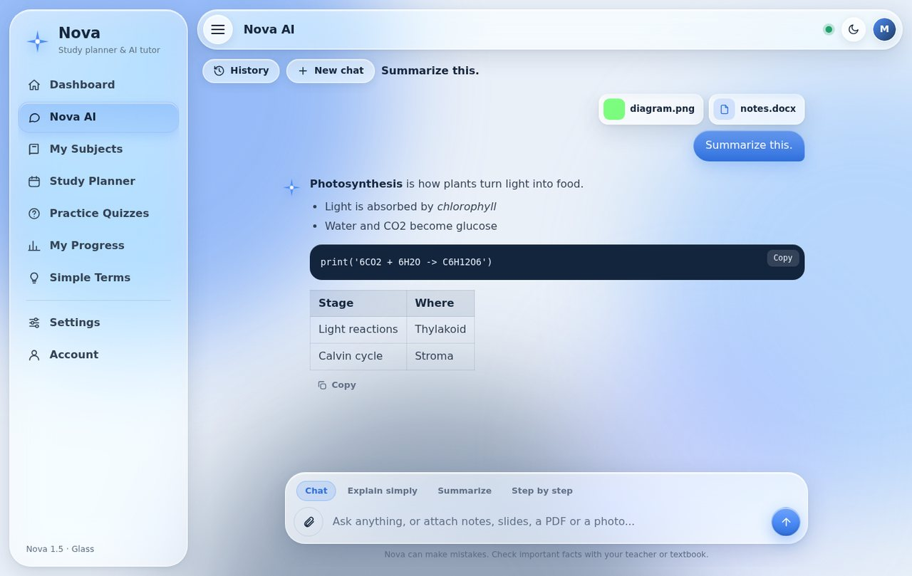

Technology can help you learn. Only if you stay in charge.
Our SDG 4 campaign looks honestly at what technology gives students and what it can take away, then shows one tool, Nova: a study planner with an AI tutor that turns your own notes into summaries and quizzes.


What is new in Nova 1.5
A full rebuild: a calmer interface, a smarter tutor, and tools that start from your own material.
An AI tutor that explains, not just answers
Ask anything and get a clear answer first, then the reasoning. It adapts to your level, shows steps for maths and code, and coaches you on homework instead of handing over the final answer.
Attach a file or a photo
Drop in a PDF, slides, a Word file, notes or a picture of a page. Nova summarizes it into a short overview, key points and terms to know.
Quizzes from your material
Turn any file or photo into multiple-choice questions with explanations, then save them to a subject.
Liquid glass design
Frosted, translucent panels with soft highlights and light and dark themes, on the app and this site.
A menu that gets out of the way
Hide or show the left menu with the three-line button, or press Ctrl+B.
Private by design
Subjects, tasks, quiz results and saved chats stay on your computer. Only the text and files you choose to send to the AI leave it, and Nova asks first. AI can make mistakes, so check important facts.
Why we chose SDG 4
Sustainable Development Goal 4 calls for inclusive, equitable, quality education and lifelong learning opportunities for everyone.
Students today have more tools than any generation before: search engines, learning apps, video lessons, and AI assistants. Access to those tools is uneven, and using them well is a skill of its own.
This campaign is for students who want to use technology to study better without letting it do the thinking for them.
What you will find here
Start anywhere. Each page answers one question.
- The ProblemWhat makes studying hard, and where technology fits in.
- Tech in EducationThe advantages and risks of learning technology, side by side.
- STS ConnectionHow science, technology, and society shape each other in education.
- Meet NovaOur proposed solution: a study planner, AI tutor and practice quiz app.
- ReferencesThe sources behind every claim on this site.
Science, technology, and society in one line
Research on how people learn informs the tools we build, and those tools change how society learns.
Science
Research on memory, practice, and feedback shows what helps people learn.
Technology
Apps like Nova turn that knowledge into planners, quizzes, and progress tracking.
Society
Students, schools, and families decide how, and whether, those tools are used well.